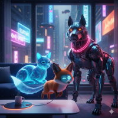

Echo-City and Its Solution
The problem
It is the year 2088, where real nature is gone and the hyper-urbanization of Echo-City, a place filled with shadows, tall buildings, and reflected neon light, leaves the city with plenty of technology but very little companionship. Real animals had become a luxury of the past, that have become preserved in high-security bio-domes.
The Solution
With the loneliness epidemic on the rise, the city’s tech-workers and hackers created Neon-Paws. The agency works from a high-tech sanctuary where Artificial Life Specialists curate the collection of synthetic and bio-augmented companions. Unlike a standard retail store, that are now limited, Neon-Paws treats every adoption as a System Integration, ensuring that the pet’s digital consciousness perfectly aligns with the owner’s neural lifestyle.
About Neon-Paws
The website is where consumers can connect to Neon-Paws, by taking an interactive journey to match to the pet that best suits their lifestyle. There is a Bio-Sync Algorithm that matches the humans with their perfect robotic or chimera friend. The agency believes that while these companions might be made of silicon, liquid, or scrap metal, the bond they form with their owners is 100% real.
Contact
Ready to bring life back into your home? If you want to adopt a Neon Paw, begin you Bio-Sync session by calling our Integration Specialists at 1-800-NEON-PAW. Our technicians are standing by in Echo-City to help you find your new compainion.
Learn About Some of Our Pets
Discover the unique companions that are waiting for a home in Echo-City!

Pixel (The Bit-Fox)
A small, hovering companion that displays emojis to match your mood.
Vibe: Playful and Energetic
Learn more about Pixel here.
Aqua, the Hydro-Cat
Aqua is a liquid-based bio-chimera designed for owners who prefer a calm, stoic presence in their home.
Vibe: Calm & Fluid
Learn more about Aqua here.
Rusty (Titan-Pup)
Rusty isn't just a pet; he is a shield. His presence brings a sense of security to any Echo-City apartment. He doesn't hover or flow—he stands his ground.
Vibe: Brave & Protective
Learn more about Rusty here.